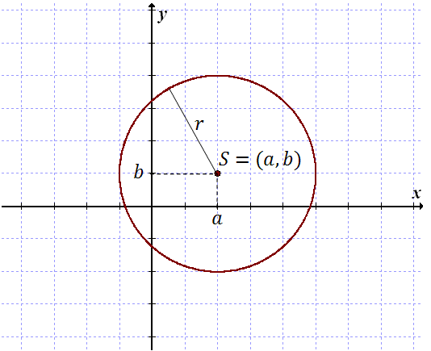
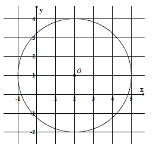
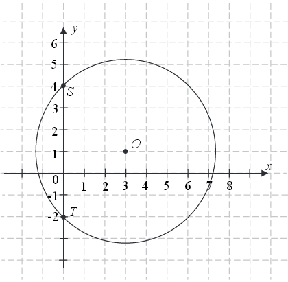

Równanie okręgu
Równanie okręgu w postaci kanonicznej jest
następujące: \[(x-a)^2 + (y-b)^2 = r^2\] gdzie:
\(S = (a, b)\) - środek okręgu
\(r\) - promień okręgu

Dany jest okrąg o równaniu \((x+3)^2+(y-4)^2=25\) . Środkiem \(S\) tego okręgu jest
punkt:
A.\( S=(-3,-4) \)
B.\( S=(3,4) \)
C.\( S=(3,-4) \)
D.\( S=(-3,4) \)
D
Odległość między środkami okręgów o równaniach
\((x+1)^2+(y-2)^2=9\) oraz
\(x^2+y^2=10\) jest
równa
A.\( \sqrt{5} \)
B.\( \sqrt{10}-3 \)
C.\( 3 \)
D.\( 5 \)
A
Okrąg o równaniu
\((x+2)^2+(y-1)^2=13\) ma promień równy
A.\( \sqrt{13} \)
B.\( 13 \)
C.\( 8 \)
D.\( 2\sqrt{2} \)
A
Dane są punkty \(S=(2, 1)\), \(M=(6, 4)\). Równanie okręgu o środku \(S\) i
przechodzącego przez punkt \(M\) ma postać
A.\( (x-2)^2+(y-1)^2=5 \)
B.\( (x-2)^2+(y-1)^2=25 \)
C.\( (x-6)^2+(y-4)^2=5 \)
D.\( (x-6)^2+(y-4)^2=25 \)
B
Równanie
\((x+6)^2+y^2=4\) opisuje okrąg o środku w
punkcie \(S\) i promieniu \(r\). Wówczas:
A.\( S=(-6,0),\ r=4 \)
B.\( S=(6,0),\ r=4 \)
C.\( S=(6,0),\ r=2 \)
D.\( S=(-6,0),\ r=2 \)
D
Okrąg o równaniu
\((x+5)^2+(y-9)^2=4\) ma środek \(S\) i
promień \(r\). Wówczas:
A.\( S=(5,-9), r=2 \)
B.\( S=(5,-9), r=4 \)
C.\( S=(-5,9), r=2 \)
D.\( S=(-5,9), r=4 \)
C
Dany jest okrąg o równaniu
\((x+4)^2+(y-6)^2=100\) .
Środek tego okręgu ma współrzędne
A.\( (-4,-6) \)
B.\( (4,6) \)
C.\( (4,-6) \)
D.\( (-4,6) \)
D
Punkt \(O\) jest środkiem okręgu przedstawionego na rysunku. Równanie tego okręgu
ma postać: 
A.\( (x-2)^2+(y-1)^2=9 \)
B.\( (x-2)^2+(y-1)^2=3 \)
C.\( (x+2)^2+(y+1)^2=9 \)
D.\( (x+2)^2+(y+1)^2=3 \)
A
Wskaż równanie okręgu o promieniu \(6\).
A.\( x^2+y^2=3 \)
B.\( x^2+y^2=6 \)
C.\( x^2+y^2=12 \)
D.\( x^2+y^2=36 \)
D
Na okręgu o równaniu \( (x-2)^2+(y+7)^2=4 \) leży punkt
A.\(A=(-2,5) \)
B.\(B=(2,-5) \)
C.\(C=(2,-7) \)
D.\(D=(7,-2) \)
B
Wskaż równanie okręgu o środku \(S = (1,- 2)\) i promieniu \(r = 2\)
A.\( (x-1)^2+(y+2)^2=2 \)
B.\( (x+1)^2+(y-2)^2=2 \)
C.\( (x-1)^2+(y+2)^2=4 \)
D.\( (x+1)^2+(y-2)^2=4 \)
C
Liczba punktów wspólnych okręgu o równaniu
\(
(x+3)^2+(y-1)^2=4 \) z osiami układu współrzędnych jest równa
A.\(0 \)
B.\(1 \)
C.\(2 \)
D.\(4 \)
C
Środek \( S \) okręgu o równaniu
\( x^2+y^2+4x-6y-221=0
\) ma współrzędne
A.\(S=(-2,3) \)
B.\(S=(2,-3) \)
C.\(S=(-4,6) \)
D.\(S=(4,-6) \)
A
Liczba punktów wspólnych okręgu o równaniu
\((x-1)^2+y^2=4\) z prostą
\(y=-1\) jest równa
A.\( 0 \)
B.\( 1 \)
C.\( 2 \)
D.\( 3 \)
C
Ile punktów wspólnych ma prosta o równaniu
\(y=-x+2\) z
okręgiem o środku w początku układu współrzędnych i promieniu \(2\)?
A.\( 0 \)
B.\( 1 \)
C.\( 2 \)
D.\( 3 \)
C
Ile punktów wspólnych ma prosta o równaniu
\(y = 3\) z
okręgiem o środku w punkcie \(S(1, 2)\) i promieniu \(1\)?
A.\( 0 \)
B.\( 1 \)
C.\( 2 \)
D.\( 3 \)
B
Ile punktów wspólnych ma prosta o równaniu
\(y=2x+1\) z
okręgiem o środku w punkcie \(S=(2, -2)\) i promieniu \(1\)?
A.\( 0 \)
B.\( 1 \)
C.\( 2 \)
D.\( 3 \)
A
Styczną do okręgu
\((x - 1)^2 + y^2 - 4 = 0\) jest
prosta równaniu
A.\( x=1 \)
B.\( x=3 \)
C.\( y=0 \)
D.\( y=4 \)
B
Wyznacz równanie okręgu o środku w punkcie \(S=(4, −2)\) i przechodzącego przez
punkt \(O=(0, 0)\).
\((x-4)^2+(y+2)^2=20\)
Wyznacz równanie okręgu stycznego do osi \(Oy\),
którego środkiem jest punkt \(S=(3, -5)\).
\((x-3)^2+(y+5)^2=9\)
Wyznacz równanie okręgu o środku w punkcie \(S = (3,
-5)\) przechodzącego przez początek układu współrzędnych.
\((x-3)^2+(y+5)^3=34\)
Prosta o równaniu \(3x - 4y - 36 = 0\) przecina okrąg o
środku \(S = (3, 12)\) w punktach \(A\) i \(B\). Długość odcinka \(AB\)
jest równa \(40\). Wyznacz równanie tego okręgu.
\((x-3)^2+(y-12)^2=625\)
Prosta o równaniu \(y = x + 2\) przecina okrąg o równaniu
\((x - 3)^2 + (y - 5)^2 = 25\) w punktach \(A\) i \(B\). Oblicz
współrzędne punktów \(A\) i \(B\) oraz wyznacz równanie stycznej do danego okręgu przechodzącej
przez jeden z tych punktów.
\(y=-x+8-5\sqrt{2}\)
Wyznacz równanie okręgu przechodzącego przez punkt \(A = (2, 1)\) i stycznego do
obu osi układu współrzędnych. Rozważ wszystkie przypadki.
\((x-1)^2+(y-1)^2=1\) lub \((x-5)^2+(y-5)^2=25\)
Okrąg o środku w punkcie \(S=(3,7)\) jest styczny do prostej o równaniu \(y=2x-3\).
Oblicz współrzędne punktu styczności.
\(\left(\frac{23}{5}; \frac{31}{5}\right)\)
Prosta \(y = x + 4\) przecina okrąg o równaniu \((x + 1)^2 + (y
- 2)^2 = 25\) w punktach \(A\) i \(B\). Oblicz współrzędne punktów \(A\) i \(B\), a
następnie oblicz obwód trójkąta \(ABS\), gdzie \(S\) jest środkiem danego okręgu.
\(A=(-5,1)\), \(B=(2,6)\), \(Ob=10+7\sqrt{2}\)
Długość okręgu opisanego równaniem
\(x^2-4x+y^2-4=0\)
jest równa:
A.\( 4\sqrt{2}\pi \)
B.\( 4\pi \)
C.\( 2\sqrt{2}\pi \)
D.\( 8\sqrt{2}\pi \)
A
Środkiem okręgu o równaniu
\( (x+2)^2+(y-3)^2=16 \)
jest punkt:
A.\(S=(2,3) \)
B.\(S=(-2,3) \)
C.\(S=(2,-3) \)
D.\(S=(-2,-3) \)
B
Liczba punktów wspólnych okręgu o równaniu \( (x+2)^2+(y-3)^2=4\ \) z osiami układu
współrzędnych jest równa
A.\(0 \)
B.\(1 \)
C.\(2 \)
D.\(4 \)
B
Punkt \( P=(-1,0) \) leży na okręgu o promieniu \( 3 \). Równanie tego okręgu może
mieć postać
A.\((x+1)^2+y^2=9 \)
B.\(x^2+\left ( y-\sqrt{2} \right )^2=3 \)
C.\((x+1)^2+(y+3)^2=9 \)
D.\((x+1)^2+y^2=3 \)
C
Okrąg przedstawiony na rysunku ma środek w punkcie \(O=(3,1)\) i przechodzi przez
punkty \(S=(0,4)\) i \(T=(0,-2)\). Okrąg ten jest opisany przez równanie 
A.\( (x+3)^2+(y+1)^2=18 \)
B.\( (x-3)^2+(y+1)^2=18 \)
C.\( (x-3)^2+(y-1)^2=18 \)
D.\( (x+3)^2+(y-1)^2=18 \)
C
Okrąg opisany równaniem \((x−3)^2 + (y + 2)^2 = r^2\) jest styczny do osi \(Oy\).
Promień \(r\) tego okręgu jest równy
A.\( \sqrt{13} \)
B.\( \sqrt{5} \)
C.\( 3 \)
D.\( 2 \)
C